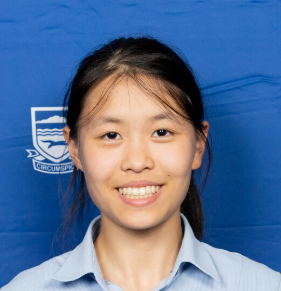

Every Thing A Student Needz
Every Wednesday lunch, M11
Google Classroom code: hwon5zpu
Our Vision
ETASNZ (Every Thing A Student Needz) is a club that aims to help students gain valuable skills to help
them
in their high school life and reach their full potential. We will teach students:
How to manage their time
How to study efficiently
How to choose the right extracurriculars
The club is open to students of all year levels to join!
"
The purpose of this new club is to help students feel confident in themselves and their abilities. In our
modern
society,
too many teenagers feel as if they are not good enough due to peer pressure and social media. In this club,
we aim to help students develop the best and truest version of themselves by showing them what they are capable
of
with the right knowledge and strategies.
We will teach them how to manage their school life without burning out, and we will do this by sharing proven
and
tested methods that work,
rather than letting students trial and error until they find the right technique for themselves.
"
-Emma Zhang, founder of ETASNZ
IT IS HELD EVERY WEDNESDAY LUNCHTIME IN M11!
Meet the ETASNZ leaders!
The ETASNZ leaders is a dedicated team of students who bring a rich expanse of knowledge to share with the
club.
We Are Recruiting!
ETASNZ is currently recruiting more leaders through this
Google Form posted on the Google Classroom.
The selected students will be shortlisted for an interview in the first week of term 2.
Emma Zhang - Founder
"Sometimes in life, having books to read and tests to take is happiness in a sense."
Emma Zhang is the founder and main leader of ETASNZ. She is a diligent student who has excellent
time-management skills, understands the secret behind efficient study, and works hard to balance her academics
and extracurriculars.
Mr McArthur - TIC
Mr McArthur is the brilliant math teacher in charge of ETASNZ.
You can contact him at james.mcarthur@rangitoto.school.nz
Aria Han - Website Designer & Coder

Aria Han is guy that made this website.
She's not a leader yet, but she wants to be one.